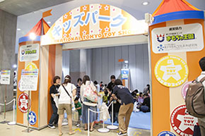
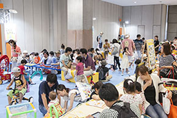
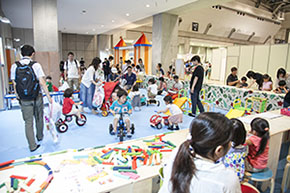

- 2015.6.20一般公開の様子ページがオープンしました。
- 2015.6.18商談見本市の様子ページがオープンしました。
- 2015.6.10ステージショーページを更新しました！
- 2015.5.29キッズパークページオープンしました！
- 2015.5.18来場者登録証ダウンロード・受注キャンペーンについて・出展社のイベントページオープンしました！
- 2015.4.27ステージショーページオープンしました！
- 2015.4.10英語版ページオープン・ホールマップ更新しました
- 2015.3.27東京おもちゃショー2015公式ホームページ、グランドオープンしました！
-
楽しいアソビがたくさんつまった「キッズパーク」。
会場で紹介されているおもちゃで自由に遊べるよ。みんなで仲よく遊んじゃおう！ -
【商談見本市】
6月18日（木）10:00～17:30
6月19日（金）10:00～17:00【一般公開】
6月20日（土） 9:00～17:00
6月21日（日） 9:00～16:00 -
西3ホールにあります。（→ホールマップはこちら）
※入場は小学生以下の方およびその保護者に限ります。
※お子様のお預かりをする施設ではありません。保護者同伴でのご利用をお願いします。
※パーク内は大変な混雑が予想されます。安全のため、入場をお待ちいただく場合もございますので、予めご了承ください。
※ベビーカーのパーク内へのお持込は、ご遠慮いただいております。  
※写真は昨年の様子です。 - 岡山県玉野市に平成８年にオープンした日本で初めての「おもちゃのテーマパーク」です。全国に５箇所のパークがあります。大自然に囲まれた園内は、国内外のトイメーカーの玩具体験パビリオンが立ち並び、「多彩な玩具」で遊び放題！幼児から安心して利用できる「のりもの」も多数完備した、こどもが主役の遊園地です。「エブリデイトイフェスタ！」をコンセプトに、日常の生活では実現できない、楽しいおもちゃの世界感と多数のアイテムでおもてなしいたします。見て、触れて、体験できる遊びの創造ランド「おもちゃ王国」は遊びの面からこどもたちの成長をバックアップしています。
-
「遊びは最高の学び」をテーマに、国立大学法人東京学芸大学と株式会社おもちゃ王国が共同で設立したＮＰＯ法人です。
①こどもたちの「あそびとまなび」をつなげるワークショップの開発と実践
②おもちゃと遊びの基礎的研究
③企業の教育参加による「社会とつながった教育」の促進
④こどもと関わる大人を増やすことを目的に、学校や地域でのこどもの教育を支援していく人材育成プログラム「教育支援人材認証制度」の運用と普及
など、「遊び」「学び」「地域の教育」をテーマとして、「こども達にもっと遊びを！」「大人もこどもも、こどモード！」をキーワードに、こどもを取り巻く環境を豊かにするための多彩な活動を行っています。